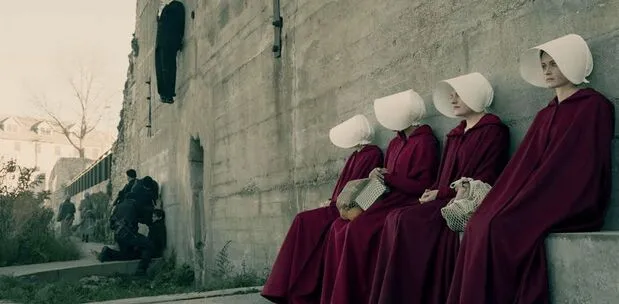
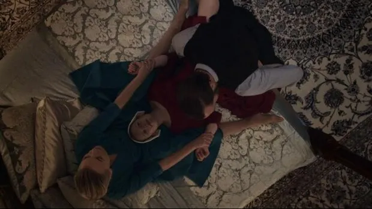
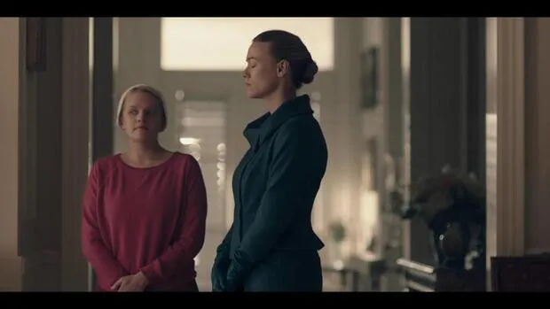
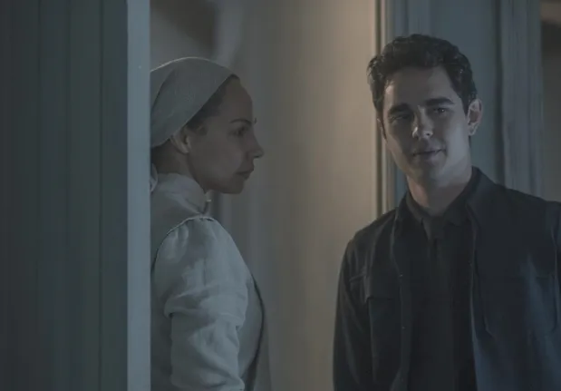
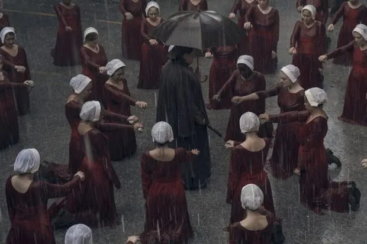
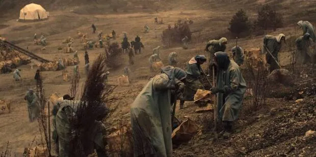

oi
oi
O conto de aia
Uma série distopica para se ver
Autor: Jackeline de Paula
Data: 31/10/2023
Na série de Os Contos da Aia disponivel na plataforma Paramount, como nos livros de The Handmaid’s Tale, é contado sobre um universo em que o mundo passa por dificuldades sociais em que há pouca disponibilidade de recursos para a população e os seres humanos não estão conseguindo mais gerar filhos já que homens e mulheres estão ficando estéreis, porém mesmo que esse problema esteja afetando a ambos, a ‘culpa’ de a natalidade está decaindo acaba caindo unicamente sobre elas. Ao longo do tempo, se apoiando nesse problemas da sociedade e utilizando de ideais religiosos extremistas, um grupo extremista toma controle dos Estado Unidos (que acaba sendo renomeado para Gilead), que para controlar as mulheres e de forma conturbada controlar a natalidade, eles vão tirando aos poucos os direitos das mulheres, retirando primeiro seu direito de trabalhar e logo em seguida, elas perdem seu direito a ter acesso aos próprios bens, que são passados para o homem que tem parentesco mais próximo, para que por último elas começam a ser obrigadas a cumprir com o seu “dever biológico” que é a reprodução humana.
Na série, que contém no total 5 temporadas, temos um aprofundamento diferente da história que é contada nos livros, em que apesar de ambos contam a história do ponto de vista da personagem Offred, que na série antes de Gilead se chamava June Osborne mas no livro so é chamada de Offred, no livro conta unicamente do ponto de vista dela, porém na série temos acesso ao ponto de vista de outros personagens e entendemos como as coisas eram antes de Gilead, como o início dos acontecimentos afetaram cada um deles de formas diferentes e como tudo começou tanto para os extremistas quanto para o resto da população.

No universo, sem olhar de forma mais criteriosa, é notado de forma mais óbvia sobre o que pode ocorrer quando um grupo não pode usufruir dos seus direitos básicos, sendo esses direitos os das mulheres, e a importância da existência desses direitos nas leis, mas ao se ver de forma mais crítica o universo vemos que ele não trata unicamente do direito das mulheres mas de toda uma sociedade, mostrando a importância dos direitos humanos onde de acordo com a ONU todos têm direito a liberdade de expressão e pensamento, direito à educação e saúde, direito à democracia. É falado também dos perigos de uma sociedade totalitária para a sua população e do quão errado é a imposição da religião de um grupo sobre todos os outros.
Por causas disso vemos ao longo da série, a população sendo controlada pelo governo totalitário e extremista religioso que vigia seu agir, o ir e o vir de todos, vemos principalmente as Aias sendo obrigadas a esquecer seus nomes, suas antigas vivências e viver unicamente para reproduzir novos filhos para Gilead porém Offred, na verdade June Osborne, fica constantemente em busca de possíveis oportunidades para sair desse sistema e ir atrás de sua filha, em que nessa busca ela usar seu nome como uma forma de resistir ao sistema e não esquecer de seus objetivos, sempre citando de alguma forma em pequenas referências dele para que ela nunca se esqueça de seu passado e se perca na situação atual em que ela se encontra.
Nos próximos tópicos veremos um pouco das primeiras 2 temporadas e ao longo do tempo, nas próximas atualizações, vamos falar um pouco sobre as próximas subsequentes.
1º Temporada
Nesta temporada temos a apresentação de todo o universo de O conto da Aia, em que é mostrado o dia a dia meio monótono das aias pela visão de Offred (Aia do comandante Fred e sua esposa Serena Joy), onde são obrigadas a ajudar em casa, participando de momentos de oração, ajudando a cozinhar, fazendo compras e saindo para caminhadas que são sempre feitas em duplas de aias para elas se vigiarem e não saiam da linha, mas nos momentos em que não estão fazendo isso, elas costumam ficar em seus quartos e pelo menos uma vez por dia elas tem que fazer uma caminhada em Gilead para não ter problemas físicos. O'que quebra essa monotonia, em um único dia de cada mês, é quando as aias estão em seu período fertil e podem engravidar, nesses dias ocorre “a cerimônia” para gerar um filho, onde todos da casa se reúnem para uma leitura da Bíblia (citando a história bíblica de Raquel, Jacó e sua aia Bila, que deu à luz filhos para a estéril Raquel "sob as pernas de Raquel"), e depois a aia se encaminha para o quarto do casal, em seguida os serviçais, depois a esposa e por último o comandante; e vestidos, as aias se posicionam entre as pernas das esposas na cama e são abusadas sexualmente de forma ritualizada pelo comandante já que elas não tem escolha nenhuma se querem ou não passar por aquilo.

Também é apresentado pequenos flashes de memória da Offred e de alguns outros personagens, que contam como foi o ponto de partida para os EUA se tornar Gilead e qual é propósito de cada um deles, para ser a favor ou contra esse novo estado. Por meio de Offred, vemos as mulheres perdendo aos poucos seus diretos de trabalhar e ter independência, também observamos a população como um todo, perder sua liberdade e ser controlada por um grupo de pessoas poderosas com ideais religiosos extremistas que pregavam que as mulheres férteis restantes devem servir unicamente ao propósito natural que deus deu a elas, que é a reprodução e continuidade da população. Por causa disso, elas passam a ser obrigadas a servir os que estão no poder só para isso, sendo chamadas de aias, perdendo seus nomes e vontades próprias, onde qualquer ato de rebeldia que pode ser de lutar contra o sistema ou simplesmente tentarem ter controle sobre o próprio corpo e pensamentos, é severamente punido.
E ao decorrer da história e da interação de cada personagem, vemos Offred, ou melhor June Osbourne decidir e se tornar um ponto importante para a resistência, pois ela decide não ser mais controlada por Gilead.

Pela visão de Serena Joy, esposa de um comandante, vemos uma mulher que estava junto aos extremistas e acreditava nos ideais deles, confiando completamente que era o dever das mulheres reproduzir novas vidas e que elas deveriam ficar felizes por aquilo. Porém ao perceber que seu esposo não segue o que o estado prega e pelo qual ambos lutavam para proteger, já que ele mantém relações pessoais indevidas com a aia, ela começa a se tornar uma mulher amargurada, que seguirá o sistema mais fielmente por considerá-lo correto e usará de métodos ruins para manter sua aia no controle para que ela sirva apenas para seu propósito que é gerar um filho.
Por meio de Nick, o olho do governo na casa do capitão Fred e Serena Joy, vemos que em seu passado ele era alguém que nunca conseguia se manter em um emprego ou ter sucesso, e com o início de Gilead e uma proposta que ele recebe dos poderosos, ele vê uma oportunidade de se tornar alguém importante e por isso ele serve fielmente a Gilead. Isso se mantém até, a pedido de Serena, ele se tornar um ponto importante para que a aia Offred gere um filho e ao decorrer da relação de ambos que sai desse pedido, Nick cria sentimentos por Offred e assim aos poucos começa a ir contra o que ele ajudava a proteger.

2º Temporada
Na temporada 2 começamos com a personagem principal dentro de uma van e sendo levada para algum lugar, porém ela não sabe se está sendo levada para ser punida por causa de suas últimas ações ou se está sendo salva pela resistência. Logo descobrimos que ela, junto com outras mulheres, está sendo levada para um estádio de baseball para oque parece, serem enforcadas. Não demora muito e descobrimos que elas não vão ser enforcadas realmente, eles só usaram isso para assusta-las ja que é uma das taticas de tortura deles, usadas para manter as mulheres na linha sem se rebelarem e logo em seguida elas são obrigadas a ficar debaixo de chuva segurando a pedra que elas se negaram a jogar na temporada anterior, e depois uma das mãos de todas as aias, menos a de June ja que ela está grávida, são queimadas como forma de punição tambem.

Nos primeiros episódios, além do que está acontecendo com June, é apresentado diretamente às Colônias, sem ser por meio de citações em conversas, onde muitas moças que foram consideradas não mulheres fazem trabalho forçado apenas por não se encaixarem ou irem contra aos ideais de Gilead. Neste lugar vemos um grupo de mulheres condenadas à morte mas que não são mortas logo de cara mas sim aos poucos dentro desses campos de concentração, onde elas vão perdendo sua saúde aos poucos graças ao efeito de trabalhar horas a fio em um solo contaminado pela radioatividade e por não terem acesso a uma alimentação adequada.

Nessa mesma temporada, com a ajuda de Nick, ela consegue fugir das suas funções como aia e se esconder em uma empresa abandonada onde ela passa mais ou menos 3 meses e no dia de sair completamente de Gilead, ela é capturada, todos que ajudaram ela diretamente a escapar são mortos e ela volta a trabalhar na casa do comandante Fred.
Depois de ser capturada aos poucos ela vai perdendo sua bravura e sua vontade de lutar contra o que prende ela naquela situação de ser aia, pois ela começa a realmente achar que não há formas de fugir daquele sistema por mais que ela lute, sendo esse pensamento um dos mais propagados pelos que sofrem negativamente pela forma de organização já que eles perderam todas as suas esperanças em serem livres novamente. Mas depois de ter problemas na gravidez e mesmo assim não ter perdido o bebê, ela decide lutar pela criança que leva em seu ventre para que ela não seja o bebê da família do capitão Fred ou uma criança de Gilead mas seja uma criança livre daquele sistema, já que se o bebê ainda estava lutando pela vida por mais que esteja passando por situações ruins, ela também vai lutar principalmente por ele.
Porém ao longo dos episódios seguintes, June acaba tendo sua segunda oportunidade de escapar, e nesse processo ela acaba sozinha no meio da neve e entra em trabalho de parto. Estando nessa situação ela percebe que no momento o melhor para a saúde e segurança da criança e dela também, é ela ter esse bebê em Gilead e a criança temporariamente ser filha do comandante Fred e de sua esposa Serena. Por causa disso ela arruma uma forma de avisar para alguém onde ela e o bebê estão e quando a encontra, elas são levadas de volta para a casa do comandante Fred onde vive uma guerra fria com Serena que não a quer perto de sua filha mesmo que seja necessário para a amamentação da criança, mas quando os ânimos de serena se acalmam e ela permite Offred se aproximar mais do bebê.
Chegando no fim da temporada, a relação de June e Serena melhora um pouco ao ponto de Serena entregar o bebê a June. É visto também as Marthas, que antes eram neutras, se juntando à rebelião e Gilead sofrendo diversos ataques de diferentes setores dentro de seu próprio estado, incluindo até as esposas, que antes eram bem a favor do estado, começam a lutar para conquistar mais liberdade.
E nos momentos finais do último episódio vemos que durante esses ataques, Offred entrega seu filho a Emily, a aia que tem mais contato com June na primeira temporada, para que ela fuja de Gilead com a criança. Nessa tentativa de fugir, Emily agride Tia Lydia que tenta impedi-la de escapar com a filha de June para o Canadá, mas depois de agredir Tia Lydia ela continua tentando escapar até conseguir e levar a criança para fora de Gilead, entregando para o esposo de June, o Luke.
Elenco
oi
oi
oi